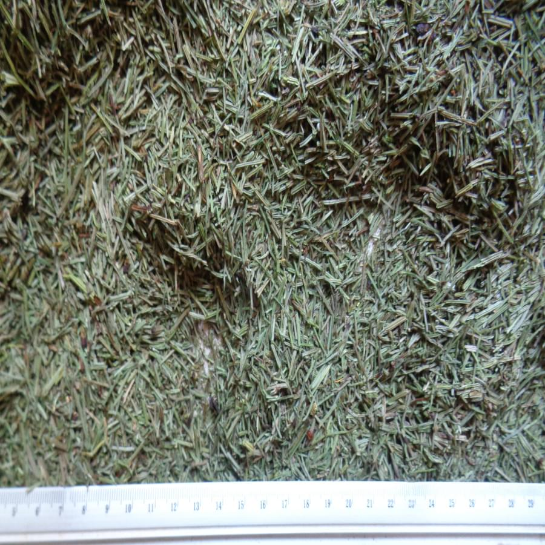

Skrzyp
Skrzyp polny, dzika rolina, ronie obficie na Lubelszczy藕nie. Nie wymaga specjalnej uprawy. Zbiera si go wiosn, suszy i wykorzystuje jako zioo lub napar. Krzemionka w skrzypie wspiera zdrowie koci i wos贸w. To przykad prostej, lokalnej hodowli o wielkim wpywie na dobrostan organizmu.
jedna z najstarszych roślin na naszej planecie
średnia wydajność to 2-3,5 tony z hektara
g贸wne zastosowanie: farmacja, kosmetologia